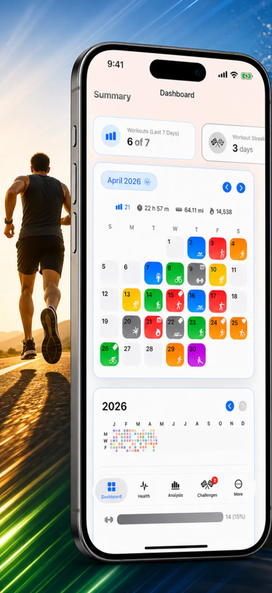
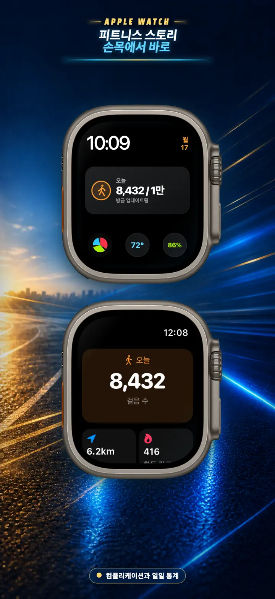
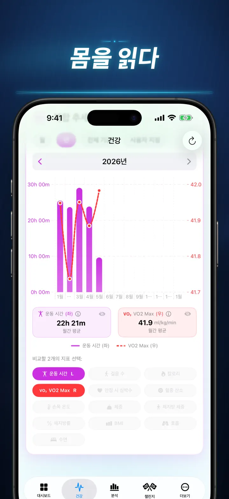
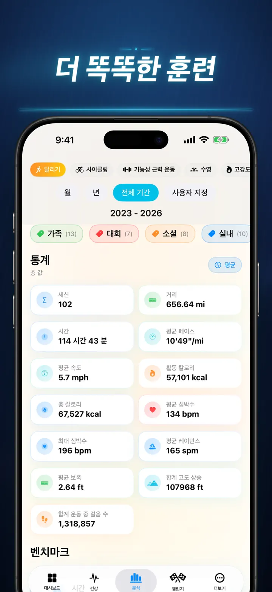
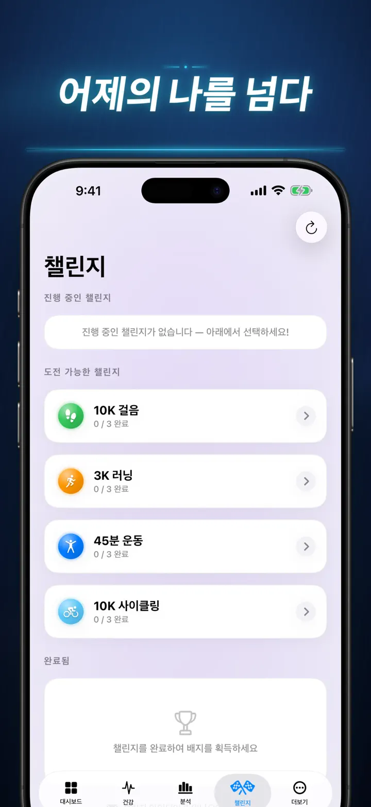
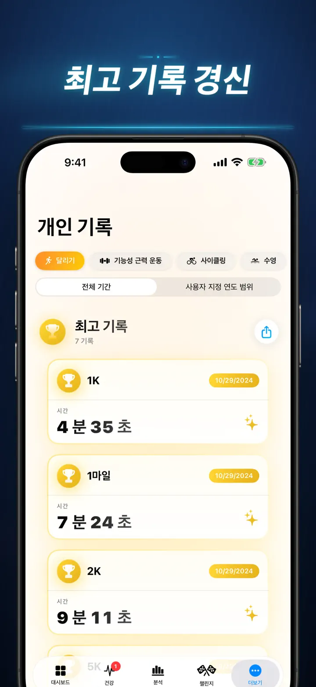
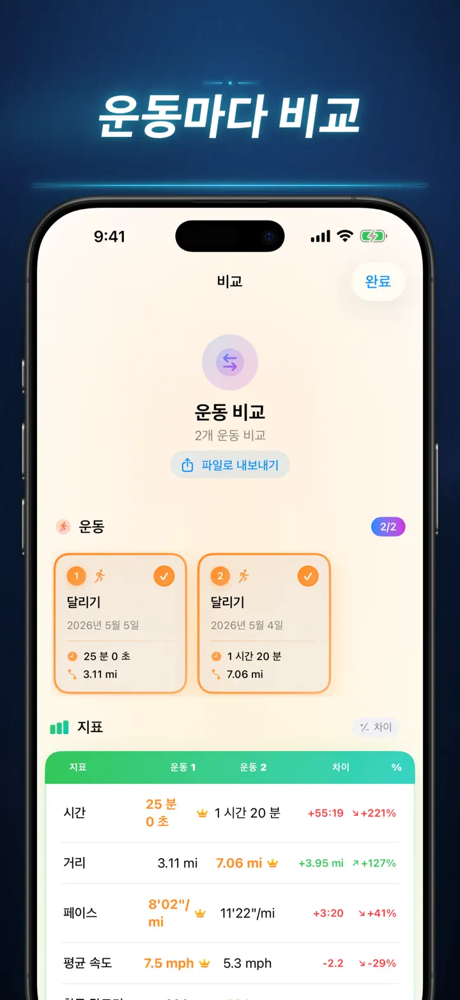
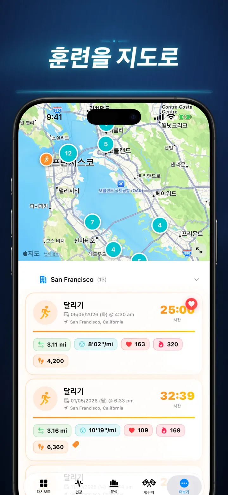
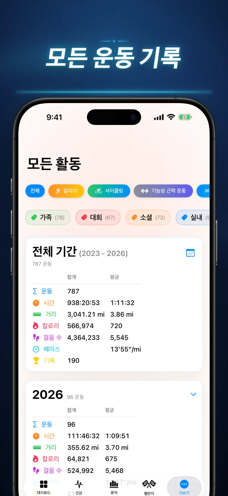

피트니스 스토리
운동 인사이트를 확인하세요
이제 Apple Watch에서: 어떤 시계 페이스에서도 오늘의 걸음 수를, ‘오늘’ 화면에서는 거리·칼로리·층수까지 — 모두 Apple 건강에서 바로.
App Store에서 다운로드
앱 정보
더 이상 감에 의존하지 마세요. 피트니스 스토리는 Apple 건강 데이터를 iOS 최고 수준의 상세 분석으로 변환합니다. 계정 등록 불필요. 서버 전송 없음. 당신의 피트니스 여정 전체를 시각화합니다.
수면 단계 확인, 러닝 케이던스 분석, 마라톤 자기 최고 기록 도전까지 — 당신의 노력에 걸맞은 올인원 대시보드가 여기에 있습니다.
Apple 건강과 동기화되는 모든 기기 및 앱과 호환됩니다 — Apple Watch, Garmin, Polar, Suunto, Zwift 등.
프로급 분석 기능
- 트렌드 & 벤치마크 차트: 상자 수염 그림으로 종목별 중앙값, 사분위수, 이상치를 확인하세요.
- 상세 필터: 시간대, 거리 범위, 소요 시간, 페이스 구간, 획득 고도, 케이던스, 보폭으로 기록을 필터링.
- 랭킹 기능: 한 번의 탭으로 오늘의 지표(거리, 페이스, 심박수 등)를 전체 기록과 비교. "상위 15%" 퍼포먼스인지 바로 확인하세요.
- 기여 그래프: GitHub 스타일 히트맵으로 전체 운동 기록을 한눈에 확인. 탭하면 일별 상세 통계도 볼 수 있습니다.
운동 상세 정보의 재정의
- 스마트 맵: 야외 경로를 속도, 고도, 심박 존으로 색상 구분 표시. (중국 지도 보정 포함)
- 심층 스플릿 분석: KM 또는 마일 단위로 각 구간의 페이스, 고도, 심박수, 케이던스를 표시.
- 심박 존: 나이와 안정 시 심박수 기준 맞춤 존 1~5 체류 시간을 시각화.
- 풍부한 기록: 사진, 서식 있는 메모, 노력도 평가(1~10), 사용자 태그를 운동에 추가.
종합 건강 커맨드 센터
- Apple Watch가 측정하는 모든 데이터를 한 곳에서 일별, 주별, 연별 트렌드로 확인:
- 심장 건강: 안정 시 심박수, VO2 Max(연령 보정), 혈중 산소, 호흡수.
- 체성분: 체중, 체지방률, 제지방량, BMI를 트렌드 지표와 함께 표시.
- 활동 & 회복: 걸음 수(시간대별 분석), 활동 칼로리 vs 기초 칼로리, 손목 온도 편차.
- 고급 수면 트래킹: 깊은 수면, 코어, REM, 각성 단계를 매일 밤 시각화.
- 상관관계 오버레이: 여러 건강 지표를 겹쳐서 수면이 심박수에 미치는 영향, 체중이 VO2 Max에 미치는 영향 등을 확인.
비교 & 경쟁
- 운동 비교: 최대 10개의 운동을 나란히 비교. 스플릿별로 차이 비율(예: "+1.5% 빠름")을 표시.
- 비교 내보내기: 다른 도구로 분석하고 싶으신가요? 운동 비교 데이터를 내보낼 수 있습니다!
- 개인 기록: 1K, 5K, 10K, 하프, 마라톤, 사용자 지정 거리를 자동 추적. 금, 은, 동 트로피를 획득하세요.
- 스토리 타임라인: 모든 마일스톤, 기록, 운동을 시간순으로 정리한 피드.
당신의 데이터를 어디서나
- 글로벌 맵: 지금까지 운동한 모든 장소를 클러스터 형태의 인터랙티브 세계 지도에서 확인.
- 강력한 내보내기: 전체 기록(또는 사용자 지정 범위)을 CSV 또는 JSON으로 내보내기. 스플릿 데이터, 신체 지표, 메타데이터를 완벽하게 포함.
- iCloud 동기화: 즐겨찾기, 태그, 메모, 평가가 모든 기기에서 즉시 동기화.
- 개인정보 보호 최우선: 숨겨진 서버 없음. 데이터는 기기와 개인 iCloud에만 저장됩니다.
- 당신의 땀은 이야기를 담고 있습니다. 이제 그 이야기를 읽어볼 시간입니다. 지금 피트니스 스토리를 다운로드하세요.
피트니스 스토리를 다운로드하고 숨겨진 인사이트를 확인하세요!
Privacy Policy: https://masawata.net/privacy-policy.html Terms Of Service: https://www.apple.com/legal/internet-services/itunes/dev/stdeula/
스크린샷








피트니스 스토리
이제 Apple Watch에서: 어떤 시계 페이스에서도 오늘의 걸음 수를, ‘오늘’ 화면에서는 거리·칼로리·층수까지 — 모두 Apple 건강에서 바로.
App Store에서 다운로드